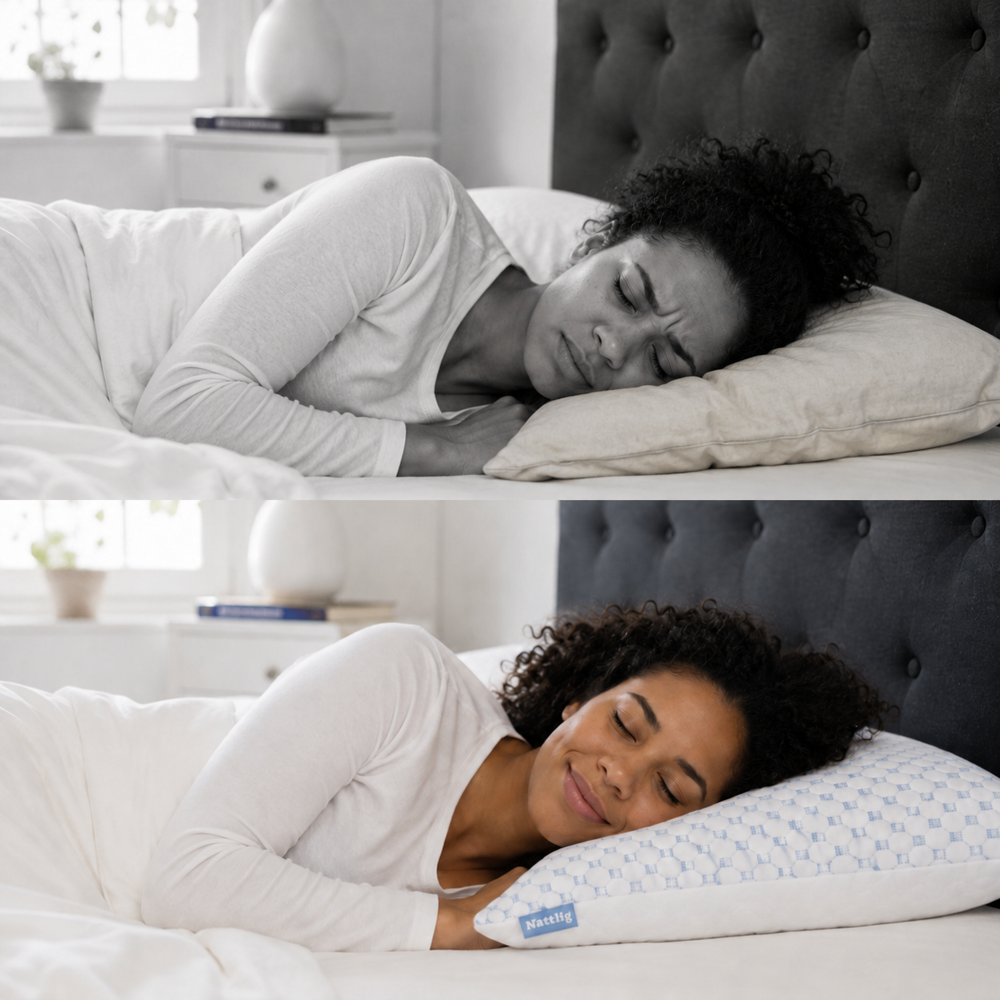
t.classList.remove('border-nattlig'));this.classList.add('border-nattlig')">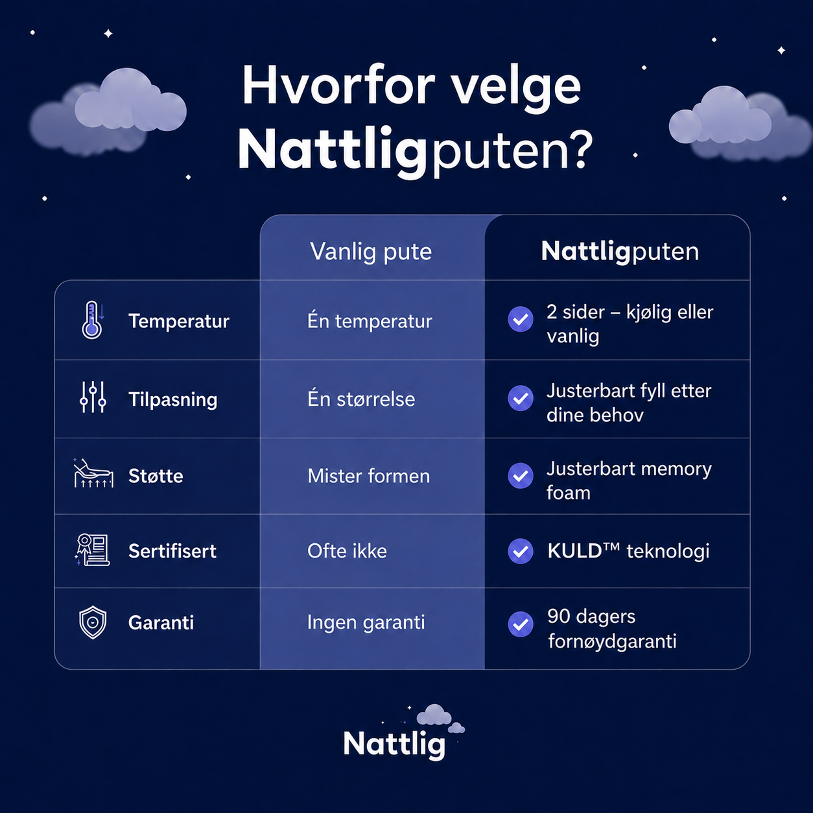
t.classList.remove('border-nattlig'));this.classList.add('border-nattlig')">Sov bedre fra første natt.
Nattlig-puten er en justerbar pute fylt med drømmeskum — ekte minneskum kuttet i 2–3 cm biter — pakket i et indre trekk inne i puten. Den kommer overfylt med vilje: du tar ut akkurat så mye fyll som trengs til høyden og fastheten passer din sovestilling og kroppstype. De fleste tar ut opp mot halvparten. Yttertrekket er i bambusfiber med en kjøligere side. Vakuumpakket i en Nattlig-brandet pappeske og sendes fra norsk lager. Norsk-utviklet. 50 × 70 cm — standard nordisk størrelse.
Glidelåsen ligger gjemt under en flik på siden av puten — den vises ikke når du ligger på den. Åpne, ta ut drømmeskum, og legg fyllet i Nattlig-boksen puten kom i. Legg deg ned og test din vanlige sovestilling: hodet skal ligge rett, ikke knekt opp eller hengende ned. Anbefalt høyde: sidesovere 12–18 cm, ryggsovere 11–13 cm, magesovere 5–10 cm. Du kan justere når du vil — legg tilbake fyll fra boksen om du tok ut for mye.
Mål: 50 × 70 cm.
Justerbar høyde: 5–15 cm.
Indre fyll: Drømmeskum (minneskum-biter, 2–3 cm).
Yttertrekk: Bambusfiber med kjøligere side, avtagbart med glidelås.
Vask: Yttertrekk maskinvask 30°C, lufttørk. Indre trekk og drømmeskum luftes — ikke vaskes. Tørketrommel er ikke OK.
Levering: Vakuumpakket i Nattlig-brandet pappeske, ~10 min å strekke seg ut, ingen lukt.
Sov på Nattlig-puten i opptil 90 netter. Hvis du ikke elsker den — send en e-post til hei@nattlig.no. Du sender puten tilbake via Posten, og hele kjøpsbeløpet er tilbake på konto innen 5 virkedager. Enkelt og trygt — ingen spørsmål. Vi anbefaler at du gir puten minst 14 dager — drømmeskum har en innkjøringsperiode der formen tilpasser seg deg.
Gratis frakt fra norsk lager. Sendes innen 24t på hverdager. Leveres med Posten eller Bring — til pakkeshop eller døra, du velger ved utsjekk. Levering normalt 1–3 virkedager i hele Norge. Ingen toll, ingen ekstra kostnader.
Verifiserte tilbakemeldinger fra de første som har sovet på puta.

Kjøpte en til meg og en til pappa. Veldig fornøyd!
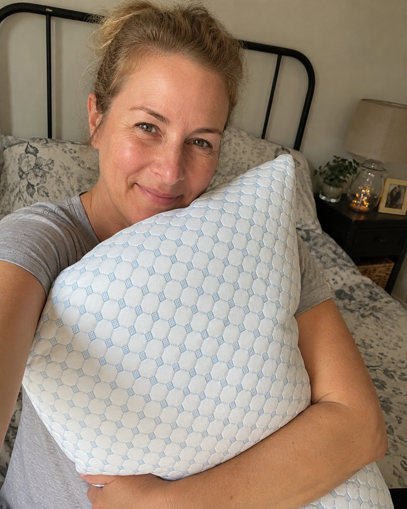
Tok ut en god del fyll første dagen. Justerte litt igjen etter en uke. Sover veldig bra nå.
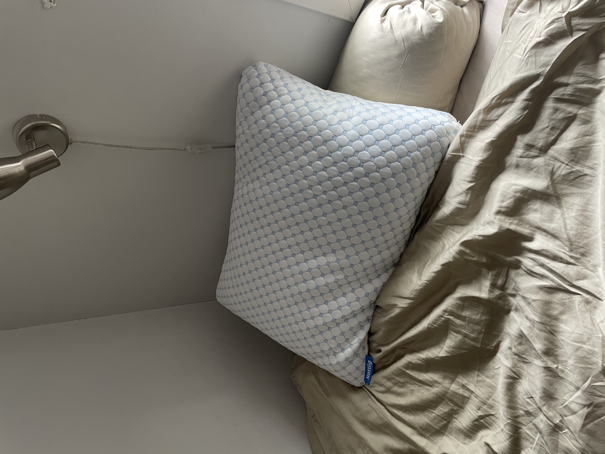
Hadde Tempur før. Var skeptisk til "justerbar". Brukte fem minutter på å finne min høyde, og nå sover jeg veldig godt.
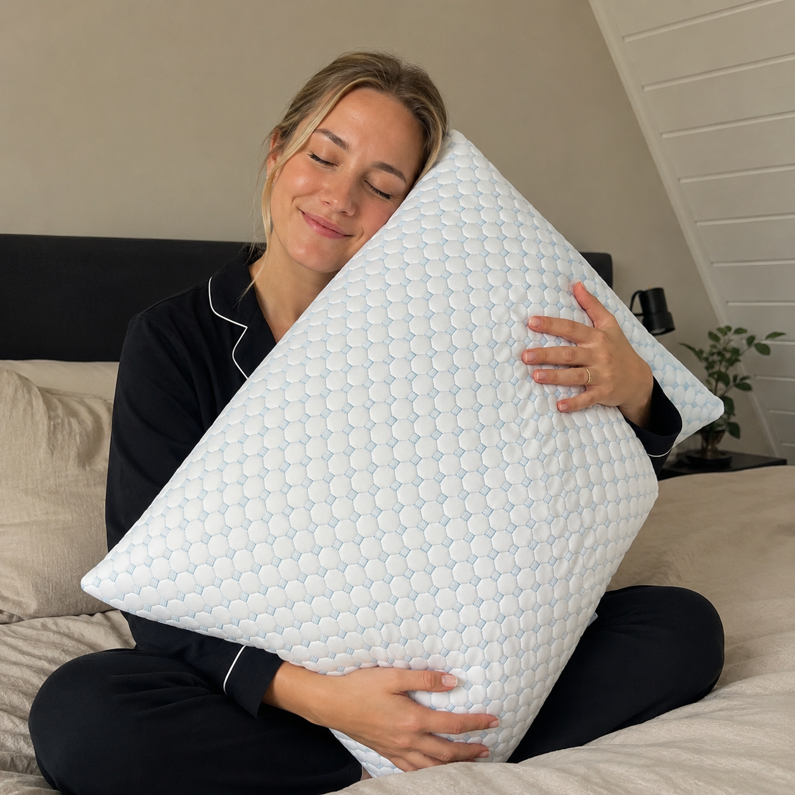
Sitter foran skjerm hele dagen og har hatt vond nakke i flere år. Tok ut omtrent halvparten av fyllet. Sover gjennom natta nå.
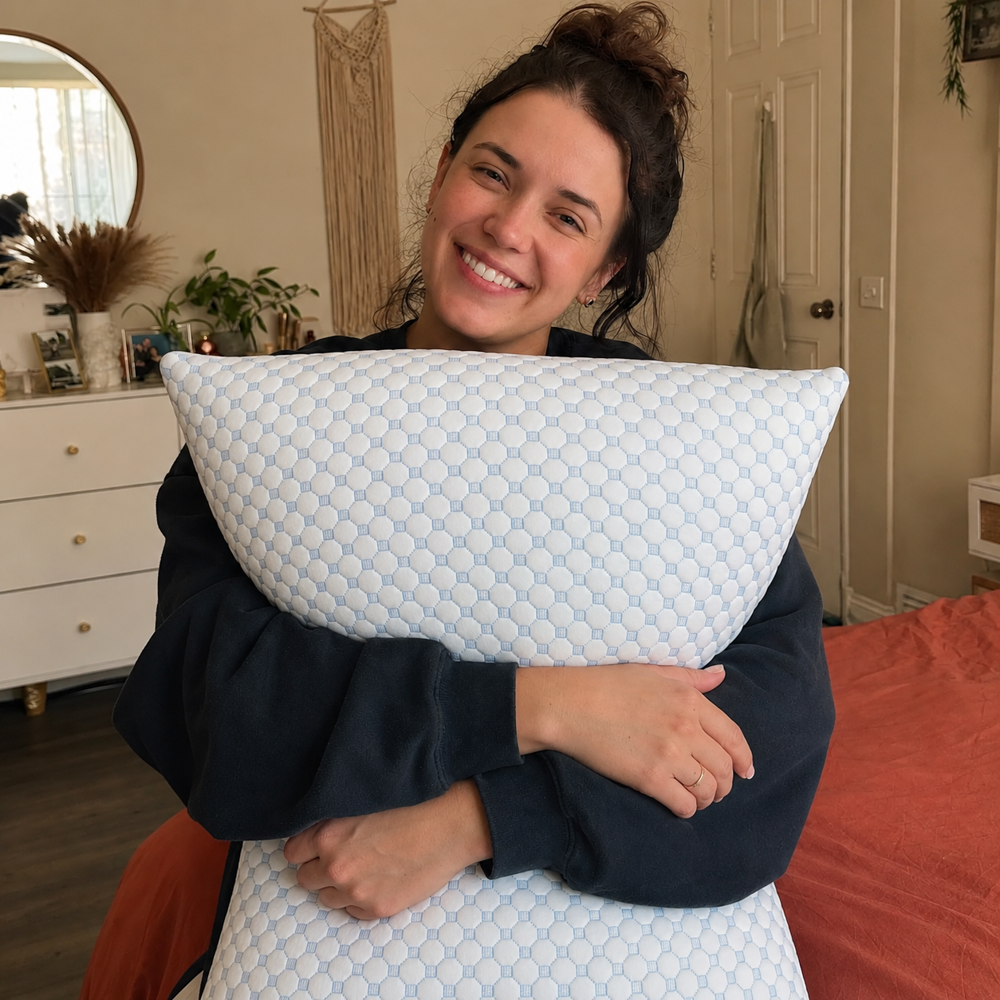
Sover alltid varmt. Den kalde sida holder seg sval lenger enn jeg trodde. Slipper å vri puta hele natta.
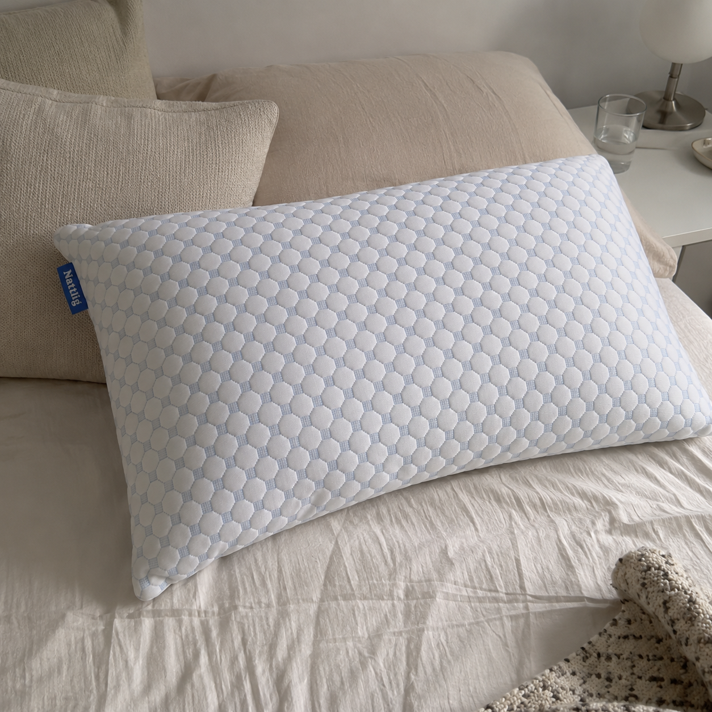
Justerte 4 ganger første uka. Litt frustrerende i starten, men da jeg fant min høyde merket jeg det med en gang. Trekker en stjerne fordi pakka tok 3 dager.
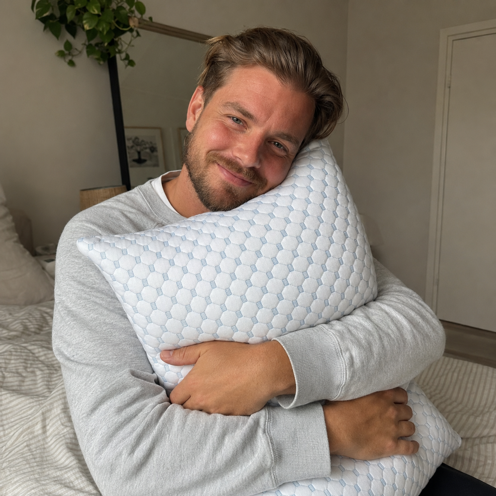
Enkelt å justere. Sover veldig godt nå, og den kalde sida funker faktisk.
Du har prøvd ny madrass, nytt sengetøy, kanskje en kiropraktor. Men puta — den har du brukt så lenge at du ikke tenker over at den er feil høyde for nakken din.
Du tilpasser puta. Du velger temperatur. Du holder den ren — natt etter natt.
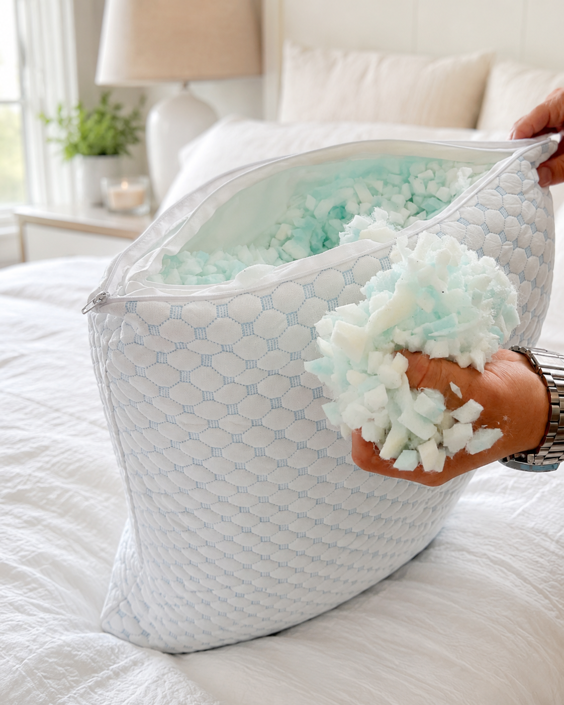
Nattlig kommer overfylt med ekte drømmeskum — minneskum-biter på 2–3 cm. Åpne den skjulte glidelåsen, ta ut til høyden stemmer for din sovestilling, og legg fyllet i Nattlig-boksen. Justér når som helst — eller legg tilbake.
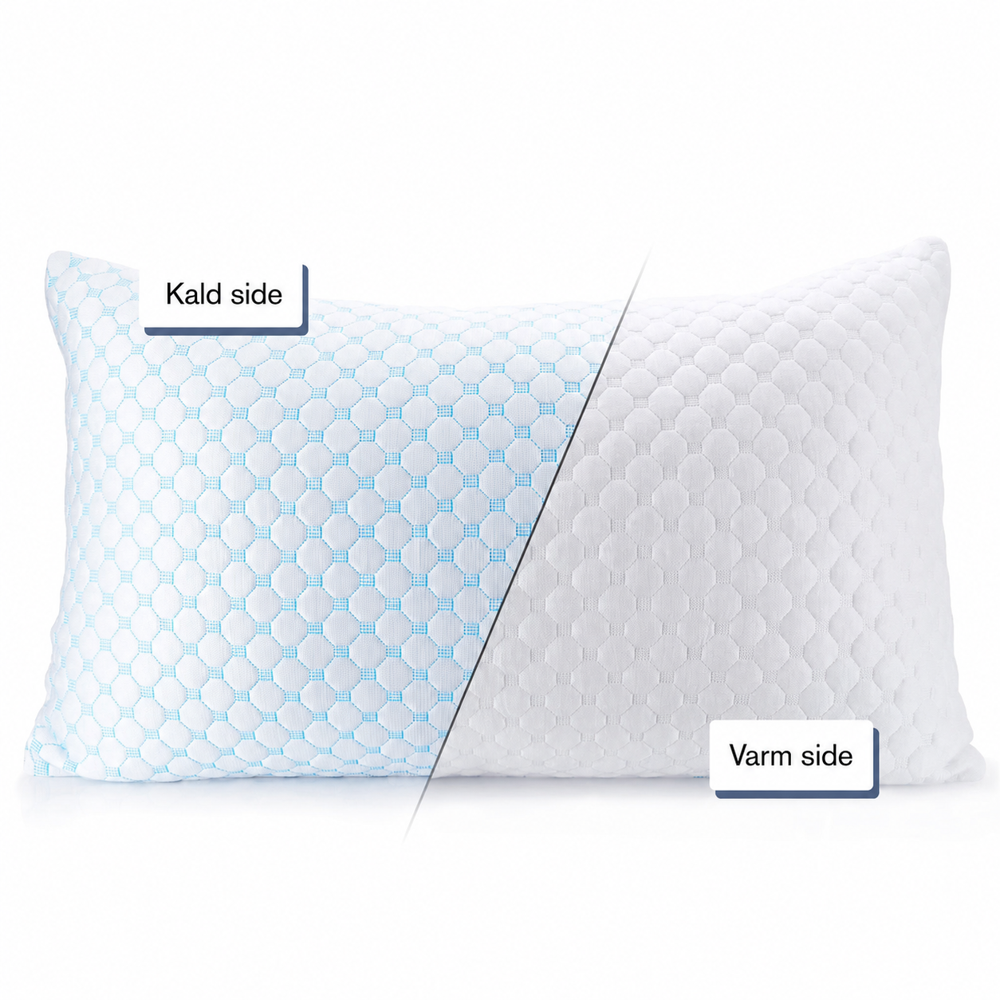
Yttertrekket har to sider. Den blå bambusfiber-siden har en cooling coating som leder varme bort fra huden — behagelig svalere når du legger deg ned. Den hvite siden er mykere og varmere. Vri puta når du sover varmt, eller behold den kalde siden hele natta.
Glidelås rundt hele yttertrekket — ta det av, kast i maskinen på 30°C, lufttørk. Vil du ha et putevar over? Helt OK — 50 × 70 cm er standard nordisk størrelse, så det passer i alle norske putevar.
Veldig fast — med vilje. Den er overfylt med drømmeskum slik at du har materialet du trenger til å justere ned til DIN passform. De fleste tar ut opp mot halvparten. Skummet oppbevarer du i Nattlig-boksen — kan legges tilbake når som helst.
Det avhenger av sovestillingen. Sidesovere: 12–18 cm. Ryggsovere: 11–13 cm. Magesovere: 5–10 cm. Du kan justere når du vil — og legge tilbake hvis du tar ut for mye.
90 netter fornøydgaranti. Send en e-post til hei@nattlig.no, så får du retur-instruksjoner. Du sender puten tilbake via Posten, og hele kjøpsbeløpet er på konto innen 5 virkedager. Enkelt og trygt. Vi anbefaler at du gir puta minst 14 dager — drømmeskum trenger en innkjøringsperiode.
De fleste rapporterer endring innen 7–14 netter. Drømmeskum har en innkjøringsperiode der formen tilpasser seg deg. Gi puta minst 14 dager før du dømmer.
Sov på Nattlig-puten i opptil 90 netter. Hvis du ikke elsker den, får du pengene tilbake. Enkelt og trygt — ingen spørsmål.
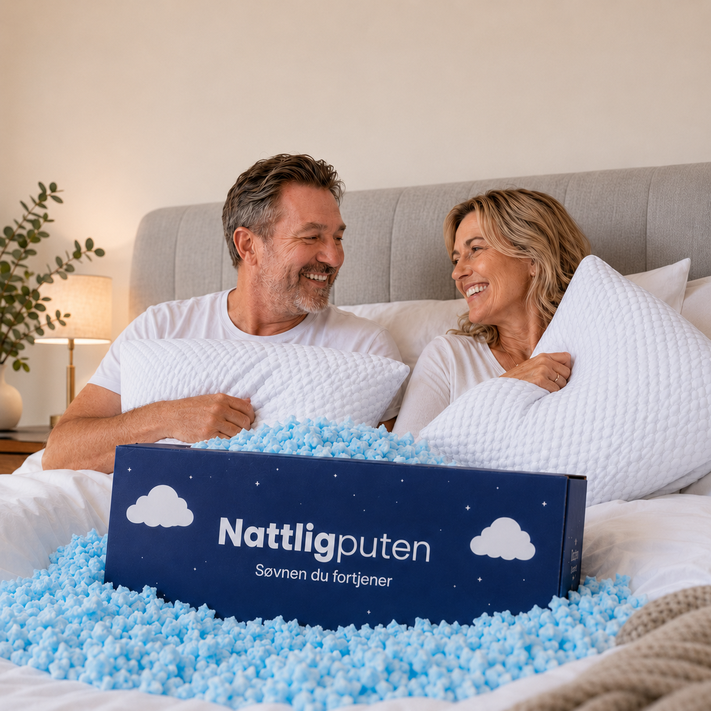
Det vanligste valget hos par. Samme produkt — du justerer din pute, partneren justerer sin. Ingen "feil side av sengen" lenger.
Bestill 2 stk — 1 198 kr →